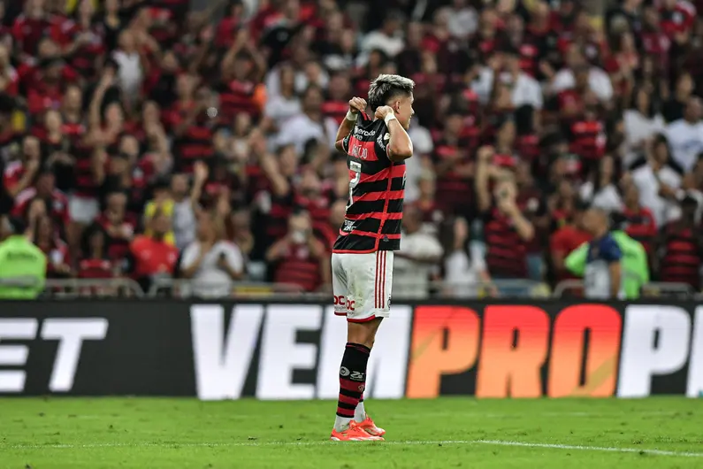

Neste domingo (22), o Flamengo visita o Grêmio, pela 27ª rodada do Brasileirão, e a equipe rubro-negra vai ao Sul com uma escalação completamente alternativa. Com cerca de 12 atletas poupados para o confronto, o time carioca deve se agarrar a uma coincidência contra o Imortal.
No período da Copa América - entre o dia 10 de junho com a liberação dos jogadores convocados, até 14 de julho -, o Rubro-Negro sobreviveu a nove jogos sem alguns dos seus principais jogadores: Arrascaeta, De la Cruz, Viña e Varela com a seleção uruguaia, e Pulgar, com a seleção chilena, além de outros desfalques por lesão. O primeiro jogo sem os citados foi contra o clube gaúcho, no dia 13 de junho.
Naquela ocasião, o Mais Querido e Grêmio duelaram no Maracanã, pela oitava rodada do Campeonato Brasileiro, e os mandantes contaram com noite inspirada de Luiz Araújo, que balançou as redes duas vezes. Com velocidade, calma e aplicação tática, o time de Tite envolveu o Imortal na vitória sobre 2 a 1.
Agora, para enfrentar o Grêmio no Sul, Tite e a comissão técnica optaram por manter os titulares no Rio de Janeiro. Priorizar o descanso e preparação especial para o jogo de volta contra o Peñarol, pela Libertadores, na quinta-feira (26). Com isso, o treinador vai mandar a campo um time recheado de reservas, assim como fez no jogo do primeiro turno, contra o Tricolor.
A necessidade de virar uma desvantagem de um gol no Uruguai e seguir vivo nas copas fez com que o Flamengo praticamente abrisse mão de jogar o Campeonato Brasileiro. Neste momento, os cariocas ocupam a quarta colocação, com 45 pontos, a 11 do líder Botafogo - e dois jogos a menos.